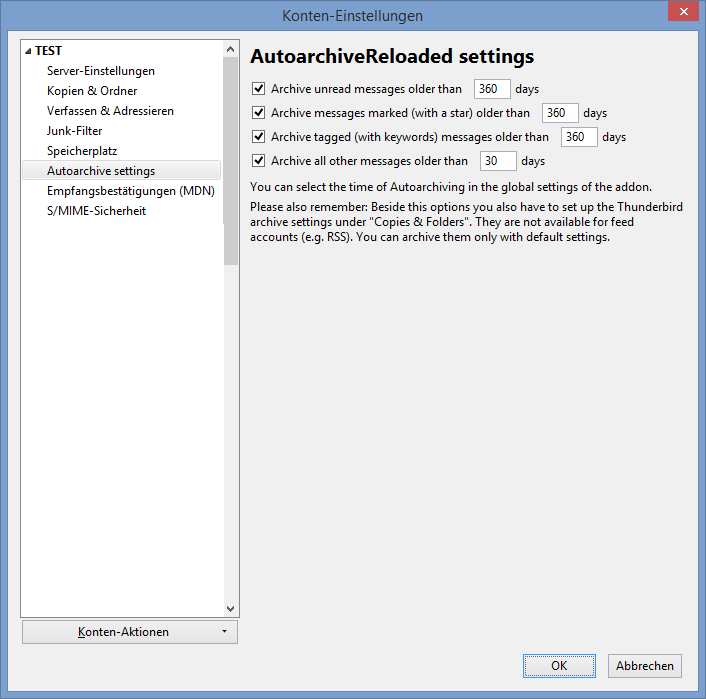
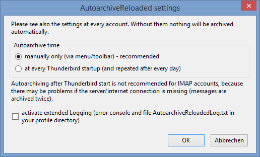

AutoarchiveReloaded
Thunderbird extension for autoarchiving mails
Welcome to the Home of AutoarchiveReloaded
AutoarchiveReloaded is a Thunderbird AddOn. You can get/install it from https://addons.mozilla.org/de/firefox/addon/autoarchivereloaded/
Thunderbird can archive messages but you have to do it manually for every message. This add-on helps you and archives your messages automatically after the time you have configured. You can use it for example if you want to archive your mails from an IMAP account (where you usually does not have so much space) to your local computer.
Attention
Use the AddOn on your own risk! Some (few) users reported data loss.
How to use it?
- Install the addon in Mozilla Thunderbird
(If you use Thunderbird 60 or below see the documentation for the old version.) - Set up normal archive settings in Thunderbird for every account (right click at an account, choose "Properties", choose "Copies and folders" and find the archive settings there)
- Open the AutoarchiveReloaded settings, for example like seen in the following screenshot:
- Set up Autoarchive settings for your accounts
- You can set up if you want to enable autoarchiving and after how many days a message is archived automatically
- You can have different settings for unread messages, starred messages (marked with a star) or messages with keywords (the settings will also be combined if a message is both or all of that)
- In the menu choose "Tools\Autoarchive now..." now to start autoarchiving.
 Then your mails are archived automatically according to your settings.
All folders of the account will be archived except Draft,Trash,Templates,Junk,Archive and Queue.
You find progress infos under the menu "Activity manager".
Then your mails are archived automatically according to your settings.
All folders of the account will be archived except Draft,Trash,Templates,Junk,Archive and Queue.
You find progress infos under the menu "Activity manager".
You can also use a button in the toolbar. If you don't see it you may have to edit your toolbar and add the button first. - In the general options of AutoarchiveReloaded you can also choose to autoarchive every time you start Thunderbird (after some seconds). Because of a bug in Thunderbird this may lead to duplicate messages if you use IMAP accounts and archiving is done when your internet connection is broken. See https://bugzilla.mozilla.org/show_bug.cgi?id=956598 for details. Therefore I have decided to let the manual start be the default!
Original version
This add-on is an improved version of another add-on called "Autoarchive" (which you find at http://code.google.com/p/autoarchive/ )
Improvements:
- does not only archive Inbox but also other folders like Sent (Junk, Trash, Drafts, Templates,Outbox and Archiv will be still ignored)
- handle subfolders
- configure unread mails separately (besides marked messages and messages with keywords)
- improve handling if a message for example is marked and has keywords
- show activities in activity window
- archiving via menu/toolbar
- you can select if you want autoarchiving at every start of Thunderbird or manual only
- add (limited) possibility to archive RSS accounts (it is limited because you don't have Thunderbird archive options at such an account, therefore you can only archive with default settings)
- ...
How to use it (old version 0.9.9.6 until Thunderbird 60)?
- Get the old version 0.9.9.6 of the addon (from version archive)
- Install the addon in Mozilla Thunderbird
- Set up normal archive settings in Thunderbird for every account (right click at an account, choose "Properties", choose "Copies and folders" and find the archive settings there)
- Set up Autoarchive settings (right click at an account, choose properties, choose "Autoarchive settings")

- You can set up if you want to enable autoarchiving and after how many days a message is archived automatically
- You can have different settings for unread messages, starred messages (marked with a star) or messages with keywords (the settings will also be combined if a message is both or all of that)
- Choose "Extras\Autoarchive" now to start autoarchiving. Then your mails are archived automatically according to your settings.
All folders of the account will be archived except Draft,Trash,Templates,Junk,Archive and Queue.
You find progress infos under the menu Extras\Activities.
You can also use a button in the toolbar. You have to edit your toolbar and add the button first. -
Important change starting with version 0.9.1
In the options of AutoarchiveReloaded you can also choose to autoarchive every time you start Thunderbird (after some seconds). Because of a bug in Thunderbird this may lead to duplicate messages if you use IMAP accounts and archiving is done when your internet connection is broken. See https://bugzilla.mozilla.org/show_bug.cgi?id=956598 for details. Therefore I have decided to let the manual start be the default! 